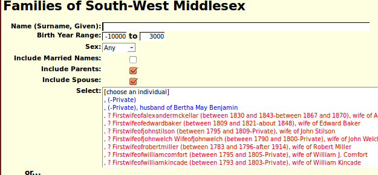
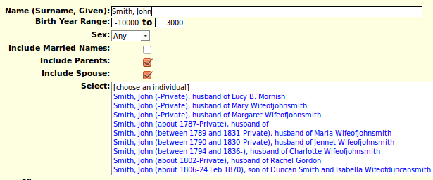

Home: Genealogy: Services:
This page is used to choose an existing individual in the database to be used by the invoking script. For example this page is used:
The page displays a selection list of 50 individuals displayed in alphabetical order first by surname, and then by given name within surname. Initially this is the first 50 individuals in the database, starting with those for whom no surname is known, or the first 50 individuals starting with the individual whose name sorts as close to the supplied name. Subsequently the list updates on the fly as you enter more information.
When you type a surname, or the beginning of a surname into the input field the list is updated on the fly whenever you stop typing for more than a fraction of a second, to include the first 50 individuals whose surname, and optionally given name, are sort at or immediately after the typed value.
Since there are some family names for which there are more than 50 members, you can also provide a given name, or prefix thereof, separated from the surname by a comma and a space. For example "Smith, John".
Note how the names of the individuals are sorted first by surname, then by given name within surname, and then by birth date, and finally by death date.
Select a specific individual in the list and then click on the button to complete the action requested by the invoking script.